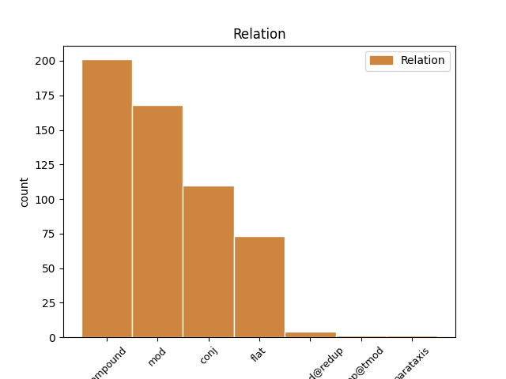
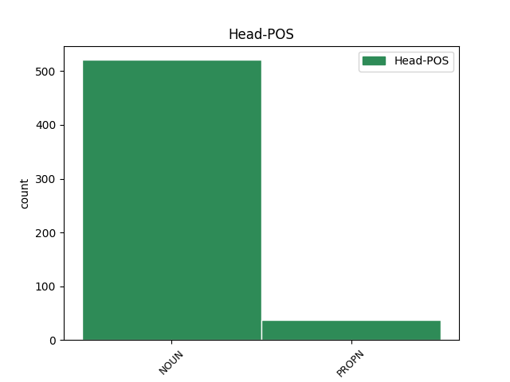
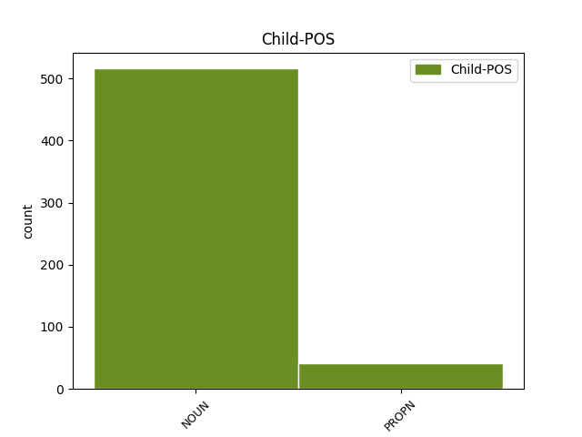

Distribution of features within this leaf



Agreement Rules sorted by frequency.
- When the dependent token is the compound(compound) of the head token,
1 天 天 NOUN n,名詞,制度,場 Case=Loc 2 compound _ Gloss=heaven|SpaceAfter=No
2 下 下 NOUN n,名詞,固定物,関係 Case=Loc 0 _ _ _
3 莫 _ _ _ _ 0 _ _ _
4 不 _ _ _ _ 0 _ _ _
5 貴 _ _ _ _ 0 _ _ _
6 者 _ _ _ _ 0 _ _ _
7 道 _ _ _ _ 0 _ _ _
8 也 _ _ _ _ 0 _ _ _
1 門 門 NOUN n,名詞,固定物,建造物 Case=Loc 2 mod _ Gloss=gate|SpaceAfter=No
2 外 外 NOUN n,名詞,固定物,関係 Case=Loc 0 _ _ _
3 之 _ _ _ _ 0 _ _ _
4 治 _ _ _ _ 0 _ _ _
5 義 _ _ _ _ 0 _ _ _
6 斷 _ _ _ _ 0 _ _ _
7 恩 _ _ _ _ 0 _ _ _
1 墳 墳 NOUN n,名詞,固定物,建造物 Case=Loc 0 _ _ _
2 墓 墓 NOUN n,名詞,固定物,建造物 Case=Loc 1 conj _ Gloss=grave|SpaceAfter=No
3 不 _ _ _ _ 0 _ _ _
4 培 _ _ _ _ 0 _ _ _
1 凡 _ _ _ _ 0 _ _ _
2 禮 _ _ _ _ 0 _ _ _
3 之 _ _ _ _ 0 _ _ _
4 大 _ _ _ _ 0 _ _ _
5 體 _ _ _ _ 0 _ _ _
6 體 _ _ _ _ 0 _ _ _
7 天 天 NOUN n,名詞,制度,場 Case=Loc 0 _ _ _
8 地 地 NOUN n,名詞,固定物,地形 Case=Loc 7 flat _ Gloss=earth|SpaceAfter=No
9 法 _ _ _ _ 0 _ _ _
10 四 _ _ _ _ 0 _ _ _
11 時 _ _ _ _ 0 _ _ _
12 則 _ _ _ _ 0 _ _ _
13 陰 _ _ _ _ 0 _ _ _
14 陽 _ _ _ _ 0 _ _ _
15 順 _ _ _ _ 0 _ _ _
16 人 _ _ _ _ 0 _ _ _
17 情 _ _ _ _ 0 _ _ _
1 少 _ _ _ _ 0 _ _ _
2 則 _ _ _ _ 0 _ _ _
3 洋 洋 NOUN n,名詞,固定物,地形 Case=Loc 0 _ _ _
4 洋 洋 NOUN n,名詞,固定物,地形 Case=Loc 3 compound@redup _ Gloss=ocean|SpaceAfter=No
5 焉 _ _ _ _ 0 _ _ _
1 時 時 NOUN n,名詞,時,* Case=Tem 0 _ _ _
2 哉 _ _ _ _ 0 _ _ _
3 時 時 NOUN n,名詞,時,* Case=Tem 1 parataxis _ Gloss=time|SpaceAfter=No
4 哉 _ _ _ _ 0 _ _ _
1 今 今 NOUN n,名詞,時,* Case=Tem 4 udep@tmod _ Gloss=now|SpaceAfter=No
2 既 _ _ _ _ 0 _ _ _
3 數 _ _ _ _ 0 _ _ _
4 月 月 NOUN n,名詞,時,* Case=Tem 0 _ _ _
5 矣 _ _ _ _ 0 _ _ _
Disagree Examples:
1 其 _ _ _ _ 0 _ _ _
2 故 故 NOUN n,名詞,時,* Case=Tem 3 mod _ Gloss=former|SpaceAfter=No
3 家 家 NOUN n,名詞,固定物,建造物 Case=Loc 0 _ _ _
4 遺 _ _ _ _ 0 _ _ _
5 俗 _ _ _ _ 0 _ _ _
6 流 _ _ _ _ 0 _ _ _
7 風 _ _ _ _ 0 _ _ _
8 善 _ _ _ _ 0 _ _ _
9 政 _ _ _ _ 0 _ _ _
10 猶 _ _ _ _ 0 _ _ _
11 有 _ _ _ _ 0 _ _ _
12 存 _ _ _ _ 0 _ _ _
13 者 _ _ _ _ 0 _ _ _
1 夏 _ _ _ _ 0 _ _ _
2 后 后 NOUN n,名詞,時,* Case=Tem 3 mod _ Gloss=after|SpaceAfter=No
3 殷 殷 PROPN n,名詞,主体,国名 Case=Loc|NameType=Nat 0 _ _ _
4 周 _ _ _ _ 0 _ _ _
5 之 _ _ _ _ 0 _ _ _
6 盛 _ _ _ _ 0 _ _ _
1 天 天 NOUN n,名詞,制度,場 Case=Loc 2 mod _ Gloss=heaven|SpaceAfter=No
2 時 時 NOUN n,名詞,時,* Case=Tem 0 _ _ _
3 不 _ _ _ _ 0 _ _ _
4 如 _ _ _ _ 0 _ _ _
5 地 _ _ _ _ 0 _ _ _
6 利 _ _ _ _ 0 _ _ _
1 必 _ _ _ _ 0 _ _ _
2 有 _ _ _ _ 0 _ _ _
3 得 _ _ _ _ 0 _ _ _
4 天 天 NOUN n,名詞,制度,場 Case=Loc 5 mod _ Gloss=heaven|SpaceAfter=No
5 時 時 NOUN n,名詞,時,* Case=Tem 0 _ _ _
6 者 _ _ _ _ 0 _ _ _
7 矣 _ _ _ _ 0 _ _ _
1 然 _ _ _ _ 0 _ _ _
2 而 _ _ _ _ 0 _ _ _
3 不 _ _ _ _ 0 _ _ _
4 勝 _ _ _ _ 0 _ _ _
5 者 _ _ _ _ 0 _ _ _
6 是 _ _ _ _ 0 _ _ _
7 天 天 NOUN n,名詞,制度,場 Case=Loc 8 mod _ Gloss=heaven|SpaceAfter=No
8 時 時 NOUN n,名詞,時,* Case=Tem 0 _ _ _
9 不 _ _ _ _ 0 _ _ _
10 如 _ _ _ _ 0 _ _ _
11 地 _ _ _ _ 0 _ _ _
12 利 _ _ _ _ 0 _ _ _
13 也 _ _ _ _ 0 _ _ _